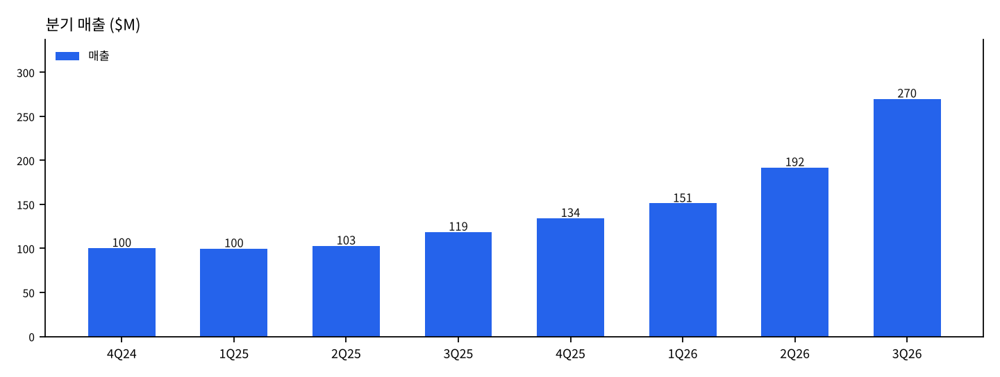
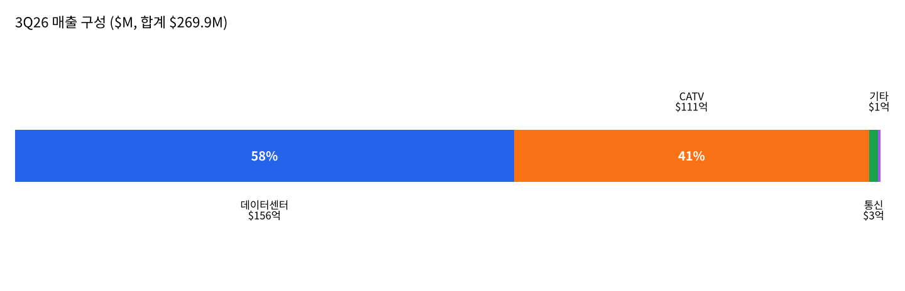
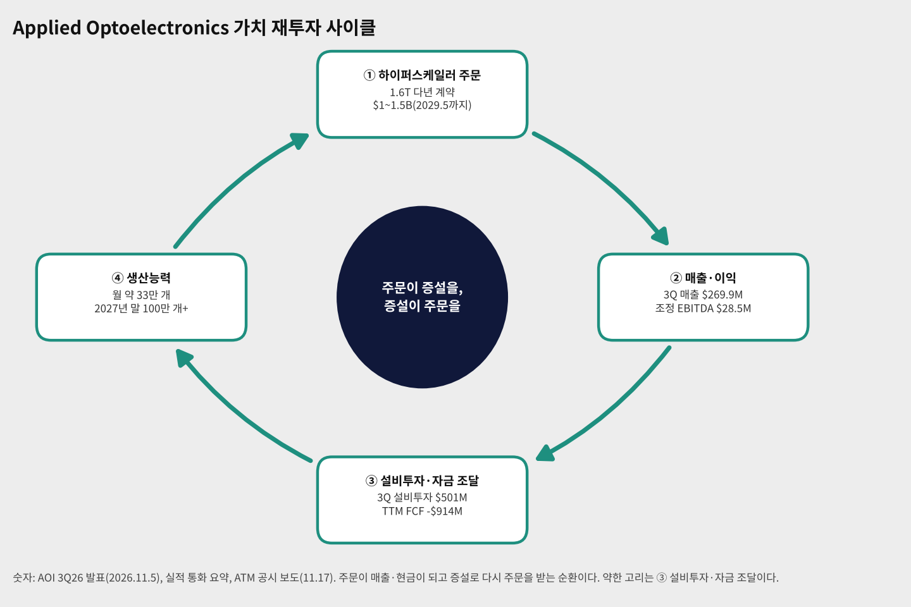

AOI는 레이저 칩부터 트랜시버 모듈까지 자체 제조하는 광통신 부품 회사다. 데이터센터용 트랜시버가 성장을 이끌고, CATV 증폭기는 안정적인 현금 사업 역할을 한다.
| 항목 | 내용 |
|---|---|
| 종목 | Applied Optoelectronics, Inc. (AAOI) · NASDAQ · 광통신 · 텍사스 슈거랜드 |
| 최근 분기(3Q26) | 매출 $269.9M, 조정 EPS $0.17, 데이터센터 $155.6M · CATV $110.9M |
| 핵심 상품 | 400G·800G·1.6T 데이터센터 트랜시버, CATV 광·증폭 장비, 통신·FTTH 소량 |
| 생산 거점 | 텍사스(신규 시설 건설 중), 타이완 공장. 현재 월 생산능력 약 33만 개(발표) |
| 직원 수 | 약 4,691명(트레이딩뷰) |
| 멀티플 | PER·PEG는 순손실·기저 음수라 산출 불가, P/S는 08~10 항목 표 참조 |
| 직책 | 인물 | 역할·특징 |
|---|---|---|
| 설립자·회장·CEO | Thompson Lin 박사 | 설립자. 800G·1.6T 증설과 미국 생산 확대를 이끌고 있다 |
| CFO·최고전략책임자 | Stefan Murry | 실적 통화에서 생산능력·자본 지출·자금 조달 계획을 설명 |
| 고객 구조 | 상위 10곳 99% | 3개 고객이 각각 41%·28%·23%(3Q26) |
경영 스타일: 증설 우선, 자금은 시장에서. 하이퍼스케일러 주문이 생산능력보다 많다고 보고 설비를 앞당겨 늘리는 대신 ATM·대출·전환사채로 자금을 조달한다. 3Q 설비투자 $501M은 3Q 매출 $269.9M의 1.9배다.
고객이 800G에서 1.6T로 주문을 예상보다 빨리 옮겼다. 1.6T 주문은 약 $450M이지만 4Q 납품은 $50~70M으로 제한된다(DSP 칩 공급이 병목, 2027년 1분기에 개선 예상).
2027년 말 월 100만 개 이상(기존 93만 개) 생산, 월 매출 $471M 목표 달성 시점은 2027년 중반에서 2027년 말로 밀렸다. 미국 신규 시설 2단계는 전력 공급 지연 때문이다.
다음 실적발표는 세 가지 질문에 답하는 자리다.
1. 생산능력이 계획대로 늘어나나?
2. 총이익률이 가이던스로 돌아오나?
3. 증자·차입이 얼마나 늘어나나?
한 줄 판정 규칙: 첫 질문(생산능력)이 계획대로 늘면 약한 고리(③ 설비투자·자금 조달)의 부담이 줄고, 늦어지면 증자가 더 필요해진다.
일정: 다음 실적 발표(4Q26)는 트레이딩뷰 기준 2027.02.25(확인 필요). 신규 ATM 집행 내역은 이후 분기 보고서에서 확인한다.
| 분기 | 매출 | 순이익 | EPS | 조정 EPS | 특이 사항 |
|---|---|---|---|---|---|
| 4Q24 | $100.3M | -$119.7M | -2.60 | -0.02 | GAAP 순손실 $1.2억(EPS -$2.60). 원인은 확인 필요 |
| 1Q25 | $99.9M | -$9.2M | -0.18 | -0.02 | |
| 2Q25 | $103.0M | -$9.1M | -0.16 | -0.16 | |
| 3Q25 | $118.6M | -$17.9M | -0.28 | -0.09 | |
| 4Q25 | $134.3M | -$2.0M | -0.03 | -0.01 | |
| 1Q26 | $151.1M | -$14.3M | -0.19 | -0.07 | |
| 2Q26 | $191.9M | -$22.8M | -0.28 | 0.06 | 조정 EPS 흑자 전환 |
| 3Q26 | $269.9M | $6.3M | 0.07 | 0.17 | 첫 GAAP 순이익. 영업손실 $1.4M이라 이익은 영업 밖 항목 덕분 |
소형주라 금액은 $M(백만 달러)로 표시했다. 3Q26 GAAP 순이익 $6.3M은 영업손실 $1.4M에 영업외 이익이 더해진 값이다. 매출·순이익·EPS(GAAP 희석)는 트레이딩뷰 스캐너, 조정 EPS는 트레이딩뷰 실적 페이지의 Reported 값이다. 분기 정렬은 오래된 분기→최신이다.

흐름 요약: 3Q26 매출 $269.9M는 전년 동기 $118.6M 대비 +127%, 최근 4분기 매출 합계는 $747.2M다. 순이익은 3Q에 +$6.3M(전년 -$17.9M)으로 돌아섰고 최근 4분기 GAAP EPS는 -$0.42, 조정 EPS는 $0.15다.
| 항목 | 내용 | 3Q26 금액 | 비중 |
|---|---|---|---|
| 데이터센터 | 100G~1.6T 트랜시버 | $155.6M | 57.7%(내 계산) |
| CATV | 케이블TV 광·RF 증폭 장비 | $110.9M | 41.1%(내 계산) |
| 통신 | 텔레콤·FTTH | $2.7M | 1.0%(내 계산) |
| 기타 | $0.7M | 0.2%(내 계산) |

3Q 데이터센터 매출은 직전 분기 대비 큰 폭으로 늘었지만 CATV도 37.6% 늘어 두 축이 함께 성장했다. 고객 3곳이 매출의 92%(41%+28%+23%)를 차지해 한 곳의 주문 변동이 실적에 직접 닿는다.
AOI는 AI 데이터센터와 방송 네트워크에 필요한 광 부품을 직접 설계·제조해 대량 공급하는 것을 목표로 한다.
| 축 | 내용 |
|---|---|
| 제품 | 400G·800G·1.6T 트랜시버(데이터센터), CATV 증폭기 |
| 고객 | 하이퍼스케일러 중심, 상위 10곳 99% |
| 생산 | 월 33만 개 → 2026년 말 50만 개 이상 → 2027년 말 100만 개 이상 |
| 자금 | ATM·대출·전환사채 |

| 이동평균 | 값 | 종가 대비 | 위치 |
|---|---|---|---|
| 5일선 | $44.25 | -9.1% | 종가 아래 |
| 20일선 | $58.00 | -30.7% | 종가 아래 |
| 50일선 | $82.59 | -51.3% | 종가 아래 |
| 100일선 | $99.00 | -59.4% | 종가 아래 |
| 200일선 | $114.96 | -65.0% | 종가 아래 |
52주 고가 $233.67(2026-05-13)·저가 $18.50(2025-11-21) 범위에서 종가 $40.21는 모든 이동평균선 아래이고.
| 규칙 | 기준 | 현재 값 | 신호 |
|---|---|---|---|
| 장기 추세 필터 | 종가 vs 200일선 | $40.21 < $114.96 | 매도 |
| 중장기 교차 | 50일선 vs 200일선 | $82.59 < $114.96 | 매도 |
| 단기 교차 | 20일선 vs 50일선 | $58.00 < $82.59 | 매도 |
| 돈키언 채널 | 55일 고가 $131.15 / 저가 $37.60 | 중간값 $84.38 아래 | 매도 |
| 1개월 모멘텀 | 21거래일 수익률 | -48.0% (기준 $77.32) | 매도 |
| 3개월 모멘텀 | 63거래일 수익률 | -67.8% (기준 $124.82) | 매도 |
| 6개월 모멘텀 | 126거래일 수익률 | -77.3% (기준 $176.81) | 매도 |
| 12개월 모멘텀 | 252거래일 수익률 | +92.5% (기준 $20.89) | 매수 |
| 종합 (8개 평균) | -0.75 | 강한 매도 |
해석: 매수 신호 1개(12개월 모멘텀), 매도 신호 7개(장기 추세 필터, 중장기 교차, 단기 교차, 돈키언 채널, 1개월 모멘텀, 3개월 모멘텀, 6개월 모멘텀). CTA 점수 -0.75(강한 매도). 14일 ATR $6.84 (17.0%), 52주 고가 $233.67 · 저가 $18.50.
| 가격 | 기준 | 무엇이 바뀌나 |
|---|---|---|
| $176.81 | 6개월 모멘텀 기준가 | 종가가 이 가격 위면 6개월 신호 매수 |
| $131.15 | 55일 고가 | 돌파 시 채널 상단 갱신 |
| $124.82 | 3개월 모멘텀 기준가 | 종가가 이 가격 위면 3개월 신호 매수 |
| $114.96 | 200일선 | 종가가 이 선 위/아래인지로 장기 추세 신호가 바뀜 |
| $84.38 | 돈키언 중간값 | 55일 채널 중간값 위/아래로 신호가 바뀜 |
| $77.32 | 1개월 모멘텀 기준가 | 종가가 이 가격 위면 1개월 신호 매수 |
| $37.60 | 55일 저가 | 이탈 시 채널 하단 갱신 |
| $20.89 | 12개월 모멘텀 기준가 | 종가가 이 가격 위면 12개월 신호 매수 |
가격 수준은 신호가 바뀌는 기준선일 뿐 진입·청산 가격 제안이 아니다. 20일/50일 교차는 이동평균 자체가 움직여 단일 가격으로 표시하지 않았다. 일봉·주봉은 종가 기준 직접 계산(고저 데이터 미사용)이다.
| 악재 요인 | 내용 | 강도 |
|---|---|---|
| 자금 조달·희석 | 11.17 신규 $550M ATM, 직전 $600M ATM(약 570만 주), 4Q 가이던스 주식 수 약 96M(약 81.6M에서 증가) | 높음 |
| 고객 집중 | 상위 10곳 99%, 3곳이 41%·28%·23% | 높음 |
| 설비투자·현금 | 3Q 설비투자 $501M, TTM FCF -$914.5M, 현금 $621.5M | 높음 |
| 총이익률 하락 | 3Q 조정 28.7%(가이던스 하단 미달), 1.6T 계약에 가격 인하 조건 | 중간 |
| 공급·전력 병목 | DSP 칩 공급, 슈거랜드 2단계 전력·건설 지연, 생산능력 목표 2026년 말 65만→50만 개 | 중간 |
| 업종 변동성 | 광통신 종목이 실적 직전 일제히 하락, 주가 52주 고가 대비 -83% | 중간 |
| 티커 | 회사 | PER(TTM) | PEG | P/S | EPS 성장(YoY) |
|---|---|---|---|---|---|
| AAOI | Applied Optoelectronics | – | – | 4.88배 | – |
| LITE | Lumentum | – | – | 14.97배 | – |
| COHR | Coherent | 44.6배 | 0.07 | 5.44배 | +596% |
| CRDO | Credo | 42.9배 | 0.14 | 15.02배 | +312% |
| FN | Fabrinet | 23.9배 | 0.66 | 2.26배 | +37% |
| CIEN | Ciena | 59.4배 | 0.16 | 6.46배 | +363% |
비교 결론: AOI는 순이익이 막 흑자로 돌아서 PER·PEG를 계산할 수 없다. TTM 매출 기준 P/S 4.88배는 Fabrinet(2.26배)보다 높고 Coherent(5.44배)보다 낮으며 Credo(15.02배)·Lumentum(14.97배)보다 훨씬 낮다. 동종 비교는 광통신 부품 대형주다.
현금은 3Q 말(9.30) 기준이고 이후 ATM·대출은 합치지 않았다. 부채는 트레이딩뷰 스캐너 총부채 값이다.
| 지표 | 값 | 출처 | 해석 |
|---|---|---|---|
| 현금·현금성자산(제한 현금 포함) | $621.5M | 3Q26 발표 | 3Q 말 기준 |
| 총부채(트레이딩뷰) | $350.2M | 트레이딩뷰 스캐너 | 리스 등 포함 여부 확인 필요 |
| 단기차입+전환사채(발표) | $188.8M | 3Q26 발표 | 당기분 $60.0M + 전환사채 $128.8M(합계는 내 계산) |
| 순현금(현금−총부채) | $271.3M | 내 계산 | ATM·대출 반영 전 |
| 잉여현금흐름(TTM) | -$914.5M | 트레이딩뷰 스캐너 | 3Q 설비투자 $501M 영향 |
| TTM 매출 | $747.2M | 트레이딩뷰 스캐너 |
| 기준 | 매출 | P/S | 비고 |
|---|---|---|---|
| 내 계산(종가 ÷ 최근 4분기 매출 합계) | $747.2M | 4.88배 | 시총은 정렬용 데이터에서만 사용 |
| 트레이딩뷰 스캐너 P/S | – | 4.79배 | 11.20 값 |
| 동종(트레이딩뷰) | – | LITE 14.97배 · COHR 5.44배 · CRDO 15.02배 · FN 2.26배 · CIEN 6.46배 | 11.20 |
해석: 현금 $621.5M은 최근 4분기 FCF 소모 속도(-$914.5M)로는 약 8개월 치다(내 계산). 이후 ATM·$200M 대출이 더해지지만 3Q 설비투자 $501M이 4Q에 더 늘어난다고 했으므로, 4Q 매출이 가이던스에 닿는지가 자금 부담을 결정한다.
EBITDA는 TTM으로는 아직 음수지만 3Q 조정 EBITDA는 $28.5M으로 돌아섰다. PEG는 PER을 EPS 성장률로 나눈 값인데, 이 회사는 GAAP·조정 모두 계산 기준이 되는 EPS가 음수라 산출하지 않는다.
| 지표 | 값 | 산출 |
|---|---|---|
| EBITDA(TTM) | -$8.0M | 트레이딩뷰 스캐너 |
| 3Q26 조정 EBITDA | $28.5M | 3Q26 발표 |
| 3Q26 GAAP 영업손실 | -$1.4M | 3Q26 발표(영업이익률 -0.5%, 내 계산) |
| 3Q26 조정 총이익률 | 28.7% | 3Q26 발표(가이던스 29~30.5%) |
| FCF 마진(TTM) | -122.4% | FCF ÷ TTM 매출(내 계산) |
| PER(GAAP·조정 TTM) | – | TTM EPS $-0.42 / 조정 $0.15이나 전년 기저가 음수 |
| 방식 | PER | EPS 성장률 | PEG | 판정 |
|---|---|---|---|---|
| GAAP EPS (TTM $-0.43) | – | – | 산출 불가 | 참고 |
| 조정 EPS (TTM $0.15) | – | – | 산출 불가 | 참고 |
판정: PEG 산출 불가(TTM EPS가 음수이거나 전년 기저가 음수) PEG 기준은 1.0 이하 투자 적격, 0.5 이하 적극 매수지만 TTM EPS가 음수인 기업에는 적용하지 않는다. 트레이딩뷰 컨센서스는 4Q26 조정 EPS $0.51, 가이던스는 $0.48~0.63이다(성장 판정이 아닌 참고 값).

Applied Optoelectronics의 사이클: 주문이 매출을 만들고 그 돈과 조달 자금이 설비로 들어가 생산능력을 늘리면 더 많은 주문을 받을 수 있다.
| 고리 | 현재 숫자·근거 |
|---|---|
| ① 하이퍼스케일러 주문 | 1.6T 전용 다년 계약, 2026.6~2029.5 매출 $1~1.5B 예상, 1.6T 주문 약 $450M(4Q 납품 $50~70M) |
| ② 매출·이익 | 3Q 매출 $269.9M(+127% YoY), 조정 EBITDA $28.5M, 4Q 가이던스 $385~420M |
| ③ 설비투자·자금 조달 | 3Q 설비투자 $501M, 현금 $621.5M, ATM $550M(신규)·대출 $200M |
| ④ 생산능력 | 월 약 33만 개, 2026년 말 50만 개 이상, 2027년 말 100만 개 이상 |
사이클의 특징: 약한 고리는 ③ 설비투자·자금 조달이다(FCF -$914M, 신규 ATM $550M). "(내 해석)"은 보고서 수치가 아닌 해석이다.